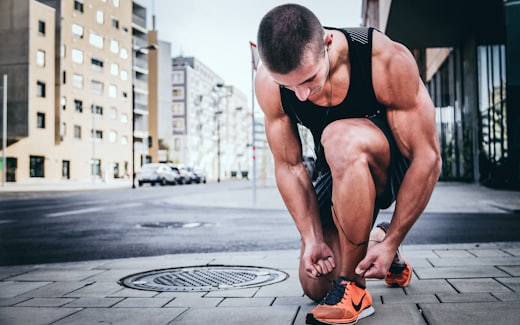

delegate –body pts –hands –latency –
use case · multi-model
PoseLandmarker knows where the arms and legs are, but it only gives a rough hand. Add HandLandmarker and you get the full rig: the 33-point body skeleton plus precise 21-point fingers on each hand — everything an avatar, a VR body, or a sign-language reader needs. Both models run at once, entirely on-device.
